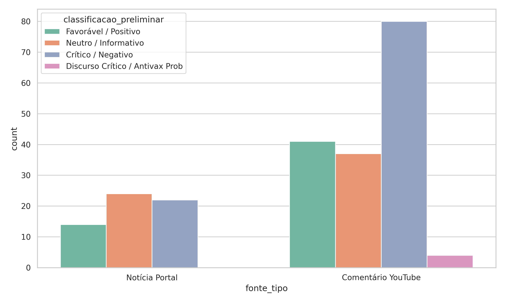

✨ Resumo Gerado por IA (Últimos 7 dias)
👍 Principais Opiniões Positivas
Os textos destacam a mobilização de campanhas locais (antirrábica para pets e mpox) e o início da aplicação de doses em diversos estados. Alertam para o avanço de doenças como Covid-19 e sarampo, reforçando a urgência da cobertura vacinal e seu impacto histórico na prevenção de mortes. Por fim, evidenciam a relevância da conscientização pública e o legado de especialistas na defesa contínua da imunização.
⚠️ Principais Críticas e Preocupações
Os textos tratam de avanços científicos (como pesquisas para vacinas contra o câncer) e da divulgação de campanhas públicas de vacinação (raiva, meningite, covid-19 e pneumocócica). As principais preocupações e pontos de tensão identificados envolvem o monitoramento pela OMS de novas variantes da covid-19 em circulação no Brasil. Destacam-se também os gargalos de oferta e a limitação de acesso global a imunizantes, representados pelo questionamento sobre a escassez da vacina contra a mpox.
Análise de Dados e Sentimentos



Destaques da Semana
Top 10 Mais Positivos
-
Score: 0.70 Notícia PortalLer na íntegra →
Cuiabá realiza campanha de vacinação antirrábica neste sábado (28) - G1
Cuiabá realiza campanha de vacinação antirrábica neste sábado (28) - G1
-
Score: 0.68 Notícia PortalLer na íntegra →
Imunização contra sarampo: baixa cobertura no Acre reforça importância da vacinação - G1
Imunização contra sarampo: baixa cobertura no Acre reforça importância da vacinação - G1
-
Score: 0.64 Notícia PortalLer na íntegra →
Vacinação de cães e gatos nos dias 28 e 29 em Paraíso - Jornal do Sudoeste
Vacinação de cães e gatos nos dias 28 e 29 em Paraíso - Jornal do Sudoeste
-
Score: 0.48 Notícia PortalLer na íntegra →
Vacinação contra mpox começa nesta quinta-feira (26) no RN; veja quem pode receber as dose...
Vacinação contra mpox começa nesta quinta-feira (26) no RN; veja quem pode receber as doses - G1
-
Score: 0.48 Notícia PortalLer na íntegra →
Covid-19 avança em 23 estados e no DF, e Brasil aplica apenas um terço do volume de vacina...
Covid-19 avança em 23 estados e no DF, e Brasil aplica apenas um terço do volume de vacinas distribuídas neste ano - G1
-
Score: 0.46 Notícia PortalLer na íntegra →
Guanandi recebe reforço da campanha gratuita de vacinação antirrábica – CGNotícias - Prefe...
Guanandi recebe reforço da campanha gratuita de vacinação antirrábica – CGNotícias - Prefeitura de Campo Grande
-
Score: 0.46 Notícia PortalLer na íntegra →
Após 4 casos confirmados de mpox, SES pede novas vacinas ao Ministério da Saúde - Campo Gr...
Após 4 casos confirmados de mpox, SES pede novas vacinas ao Ministério da Saúde - Campo Grande News
-
Score: 0.30 Notícia PortalLer na íntegra →
Avanço do sarampo nos EUA gera alerta sobre imunização de adultos - AcheiUSA
Avanço do sarampo nos EUA gera alerta sobre imunização de adultos - AcheiUSA
-
Score: 0.19 Notícia PortalLer na íntegra →
Vacina do sarampo evitou 60 milhões de mortes em 25 anos - G1
Vacina do sarampo evitou 60 milhões de mortes em 25 anos - G1
-
Score: 0.10 Notícia PortalLer na íntegra →
Guido Carlos Levi (1941 - 2026) - Mortes: Médico tornou-se especialista e defensor da vaci...
Guido Carlos Levi (1941 - 2026) - Mortes: Médico tornou-se especialista e defensor da vacinação - Folha de S.Paulo
Top 10 Mais Negativos
-
Score: -0.66 Notícia PortalLer na íntegra →
Entenda como devem funcionar os testes da vacina contra o câncer no Brasil - CNN Brasil
Entenda como devem funcionar os testes da vacina contra o câncer no Brasil - CNN Brasil
-
Score: -0.66 Notícia PortalLer na íntegra →
A vacina terapêutica do câncer, segundo uma oncologista - Nexo Jornal
A vacina terapêutica do câncer, segundo uma oncologista - Nexo Jornal
-
Score: -0.66 Notícia PortalLer na íntegra →
Vacina contra câncer em estudo no Brasil vai mirar linfomas e tumores de estômago - Folha ...
Vacina contra câncer em estudo no Brasil vai mirar linfomas e tumores de estômago - Folha de S.Paulo
-
Score: -0.44 Notícia PortalLer na íntegra →
Cuiabá terá Dia D de vacinação antirrábica neste sábado com 37 postos em 31 bairros - Pref...
Cuiabá terá Dia D de vacinação antirrábica neste sábado com 37 postos em 31 bairros - Prefeitura de Cuiabá
-
Score: -0.27 Notícia PortalLer na íntegra →
OMS monitora nova variante da covid-19 em circulação no Brasil; entenda os riscos - Estadã...
OMS monitora nova variante da covid-19 em circulação no Brasil; entenda os riscos - Estadão
-
Score: -0.15 Notícia PortalLer na íntegra →
Ministério da Saúde envia mensagens por WhatsApp para incentivar vacinação contra covid-19...
Ministério da Saúde envia mensagens por WhatsApp para incentivar vacinação contra covid-19 - Jornal de Brasília
-
Score: -0.15 Notícia PortalLer na íntegra →
Vacina Pneumo 20 está disponível para idosos e crianças em Volta Redonda - Diário do Vale
Vacina Pneumo 20 está disponível para idosos e crianças em Volta Redonda - Diário do Vale
-
Score: -0.15 Notícia PortalLer na íntegra →
Sábado (28) é o Dia para vacinação de adolescentes contra a meningite nas UBSs da capital ...
Sábado (28) é o Dia para vacinação de adolescentes contra a meningite nas UBSs da capital paulista - Prefeitura de São Paulo
-
Score: -0.10 Notícia PortalLer na íntegra →
Por que não há vacina de mpox para todos? - BBC
Por que não há vacina de mpox para todos? - BBC
-
Score: 0.00 Notícia PortalLer na íntegra →
Prefeitura de Volta Redonda disponibiliza vacina Pneumo 20 em todas as unidades de saúde -...
Prefeitura de Volta Redonda disponibiliza vacina Pneumo 20 em todas as unidades de saúde - Prefeitura de Volta Redonda